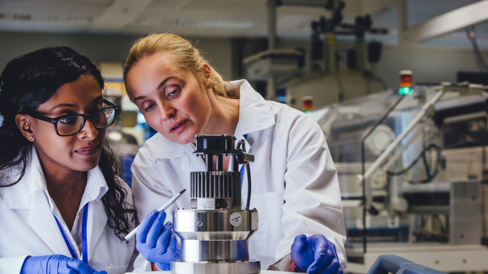

Launch Your Future as a Biomedical Engineer
Invent life-saving tech like prosthetics and surgical robots!
Pathway Snapshot
High School Courses | College Majors | Career Roles |
Biology | Biomedical Engineering | Biomedical Engineer |
Chemistry | Bioengineering | Medical Device Engineer |
Physics | Mechanical Engineering | Clinical Engineer |
Algebra II / Pre-Calculus | Electrical Engineering | Rehabilitation Engineer |
AP Computer Science | Chemical Engineering | Biomechanics Engineer |
Women Who Lead the Way
Dr. Nina Tandon
Co-founder & CEO, EpiBone
Photo Credit: Columbia Engineering
“Biomedical engineering lets me build technology that helps the body heal itself—and that’s incredibly powerful.”
Dr. Nina Tandon is an American biomedical engineer, entrepreneur, and CEO best known for pioneering personalized skeletal tissue engineering. She co-founded EpiBone, the first biotechnology company to grow living human bone and cartilage from a patient’s own stem cells, advancing the frontiers of regenerative medicine and precision surgery.
Day in the Life
Daily Tasks | Tools & Technologies |
Design and test medical devices | CAD software (SolidWorks, AutoCAD) |
Collaborate with doctors and researchers | MATLAB, Python |
Analyze biological and engineering data | 3D printers |
Improve patient safety and outcomes | Lab equipment & sensors |
Document and test prototypes | Medical imaging tools |
Mini-Activity: Try This!
Build a Better Medical Device (at Home!)
- Choose a simple problem (e.g., making a cast lighter or a pill easier to take).
- Sketch a solution on paper.
- Use cardboard, clay, or household items to build a prototype.
- Test it and improve your design—just like a real biomedical engineer!
Careers & Resources
Degree Program Finder:
- ABET-Accredited Biomedical Engineering Programs
Scholarships:
- Society of Women Engineers (SWE)
- NIH STEM Scholarships
Summer Programs:
- Girls Who Code
- Engineering summer camps at universities
Explore More:
- O*NET – Biomedical Engineers
- Roadtrip Nation – Healthcare & Engineering Stories
You Belong Here
If you love science, problem-solving, and helping people, biomedical engineering could be your future.
You don’t have to choose between healthcare and technology—this career lets you do both.
Your ideas can improve lives, shape the future of medicine, and prove that women belong at the center of innovation.
